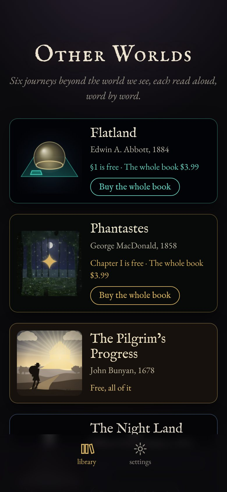

I
Every book, read aloud word by word
Each book is read by LibriVox volunteers, and each word lights as it is spoken, with the page following the voice. Tap any paragraph to hear it from there. Change the speed, set a sleep timer, and play and pause from the lock screen and your headphones.
A book’s reading is downloaded the first time you listen to it, and from then on plays without a connection, with the screen locked.
